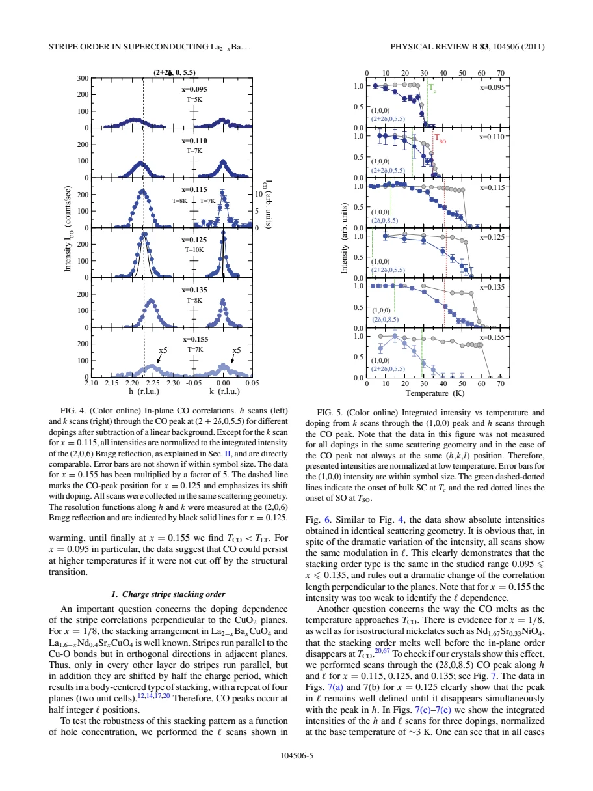
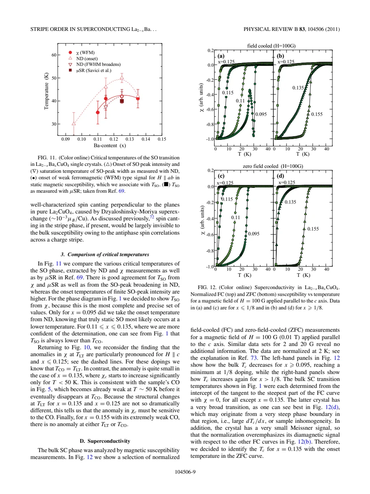
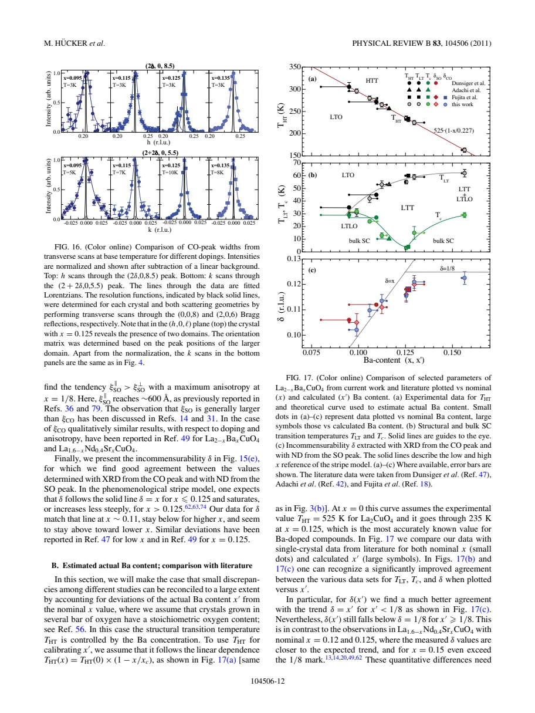

experiment · Hucker · supplied source 2011
Stripe order in superconducting La₂₋ₓBaₓCuO₄ (0.095 ≤ x ≤ 0.155)
Charge stripes occur throughout the measured doping range, including bulk superconductors, and are strongest near one eighth; the authors infer competition mainly with phase coherence.
The question: Does static stripe order necessarily eliminate superconducting pairing?
Before you start: the few terms you need
- charge-order satellite: weak diffraction reflection from an associated lattice modulation
- spin-order satellite: magnetic diffraction at an incommensurate wavevector
- correlation length: size of correlated domains inferred from resolution-corrected widths
See → explain → test
Understand it in four pictures.
Picture 1 / 4
Match probes on the same crystals
Look for: Follow structure, charge satellites, spin satellites and susceptibility.
Swipe across the picture to read every label, or enlarge it below.
- Shared LBCO crystals
- XRD: structure and charge modulation
- Neutrons: spin correlations
- Magnetization: coherence
XRD here probes the lattice modulation associated with charge order; electronic-density evidence is cited separately.
Using pieces of the same crystals reduces uncertainty from nominal composition differences.
Picture 2 / 4
Locate charge-rich stripes
Look for: Follow charge modulation and compare its intensity across doping.
Swipe across the picture to read every label, or enlarge it below.
- Charge-rich lines
- Intervening regions
Teaching charge-modulation projection only. Antiphase spins, orthogonal layer stacking and calibrated filling are not encoded.
Weak charge-order peaks survive away from one eighth, including compositions with substantial bulk Tc.
Picture 3 / 4
Separate ordering clocks
Look for: Compare structural/charge onset with neutron, magnetic and superconducting scales.
Swipe across the picture to read every label, or enlarge it below.
- Charge/structural onset
- Spin-static and local SC scales
- Bulk superconducting Tc
x = 0.155 is a structural/charge-onset exception; x = 0.095 has special reentrant behavior.
Neutron elastic intensity can appear before truly static spin order, and pairing-related diamagnetism can precede bulk coherence.
Check the original: PDF p. 5 · PDF p. 7 · PDF p. 8 · PDF p. 9
Picture 4 / 4
Test competition at Tc
Look for: Look for reduced charge or spin intensity when bulk superconductivity starts.
Swipe across the picture to read every label, or enlarge it below.
- No resolved stripe decrease at Tc
- Pairing can coexist with stripes
- Coherence competition proposed
This does not directly measure the pairing amplitude or uniquely prove PDW order.
The absence of a resolved downturn supports coexistence and the authors' phase-coherence interpretation, within measurement sensitivity.
Check the original: PDF p. 5 · PDF p. 7 · PDF p. 13 · PDF p. 14
Predict before revealing
Charge order is observed in a crystal with bulk Tc near 30 K. What conclusion follows?
Choose an answer, then compare the reasoning.
The endpoint crystals directly demonstrate coexistence, though their stripe peaks are much weaker than at one eighth.
Read the answer
Stripe order and bulk superconductivity can coexist at this composition The endpoint crystals directly demonstrate coexistence, though their stripe peaks are much weaker than at one eighth.
Go deeper Follow the full argument
The same-sample design
Hücker and colleagues combine high-energy x-ray diffraction, neutron diffraction and static magnetization on LBCO single crystals spanning nominal x = 0.095–0.155. Pieces from the same crystals are essential because actual Ba content can differ slightly from the growth target. Charge-order diffraction detects the lattice modulation associated with electronic stripes; earlier resonant scattering provides separate evidence for electron-density modulation. Spin satellites are measured by neutrons, while magnetization follows structural signatures, spin-related anomalies and superconducting response. All reciprocal coordinates use the HTT cell, even when the real-space low-temperature cell is doubled and rotated. This convention makes charge offsets 2δ and magnetic offsets δ comparable without confusing cell labels. Oxygen-controlled growth and composition calibration remain important assumptions in the comparison.
How strong and extensive the stripes are
Charge-order peaks are present at both endpoints as well as near one eighth. Their intensity and correlation length peak strongly around x = 0.125 and fall rapidly away from it. The weak endpoint signals therefore establish coexistence with bulk superconductivity without implying identical stripe strength everywhere. Resolution-corrected transverse scans are used for correlation lengths; longitudinal instrumental resolution is poorer. Spin order is also strongest near one eighth, with longer correlations along the spin stripes. No spin peak is resolved at x = 0.155, where charge order is very weak, so absence of detection is not an unlimited bound on all magnetic correlations. Charge incommensurability shifts with doping, but the simple δ = x relation is only approximate and improves after estimating actual Ba content.
Structure and stacking constrain the onset
For most studied crystals, charge order begins at the transition from LTO into LTT or LTLO. At x = 0.155 the charge onset lies below the structural transition and the sample contains an LTT/LTLO mixture, making the phase-specific contribution unquantifiable. The measured interlayer charge-order modulation retains the same stacking type for x = 0.095–0.135: neighboring stripes rotate direction and parallel stripes in alternate layers are shifted. In selected samples, in-plane and out-of-plane charge correlations disappear together, contrasting with earlier reports of premature stacking loss. The paper does not resolve that discrepancy universally. Structural pinning helps stabilize stripes, but pressure results discussed by the authors show that long-range LTT is not a necessary condition for every stripe state.
PDF p. 3 · PDF p. 5 · PDF p. 6 · PDF p. 10 · PDF p. 11 · PDF p. 13
Static spin order and superconducting scales
The onset of neutron elastic spin intensity is higher than the scale assigned to truly static spin order because finite energy resolution admits slow critical fluctuations. Peak-width changes, weak magnetic susceptibility features and external μSR comparisons give lower static scales. Weak c-axis diamagnetism appears near that scale for compositions where it can be resolved, interpreted as in-plane superconducting correlations above bulk Tc. The magnetic contribution is extremely small and is not a full Meissner fraction. Bulk Tc follows a lower scale with a deep one-eighth depression. At x = 0.095, superconductivity initially develops in LTO, weakens during the structural/charge transition and reappears later. These distinctions rule out collapsing every onset into a single universally defined superconducting temperature.
Competition, coexistence and quantitative limits
Where data quality permits, neither charge nor spin peak intensity shows a significant reduction when bulk superconductivity starts. Charge order also shows no clear change at the spin-static onset. The authors infer that stripes are compatible with local pairing but compete with three-dimensional phase coherence. That is a physically motivated interpretation, not a direct measurement of pair amplitude or unique proof of a pair-density wave. Their field-cooled and zero-field-cooled superconducting curves are normalized because flux pinning, defects and specimen geometry prevent an absolute volume comparison; the reference-section footnote states this explicitly. An empirical HTT transition calibration estimates actual x′ and improves agreement between studies, assuming stoichiometric oxygen. The source establishes broad coexistence and several discriminating constraints while retaining sample and model limits. Treat its calibrated compositions as estimates with assumptions rather than exact independently assayed values.
PDF p. 9 · PDF p. 12 · PDF p. 13 · PDF p. 14 · PDF p. 15 · PDF p. 16
Translate the mathematics Key equations and symbol meanings
QCO = (2δ,0,0.5); QSO = (0.5 ± δ,0.5,0)
Symbols: δ: incommensurability; coordinates in HTT reciprocal-lattice units; symmetry-related directions also occur.
Connects charge and magnetic modulation wavevectors. These satellite positions describe stripe correlations, not chemical Ba segregation.
s = 2(bo − ao)/(ao + bo)
Symbols: ao, bo: orthorhombic supercell lattice parameters.
Measures average orthorhombic strain, separately from tilt amplitude and electronic-order intensity.
THT(x′) = 525 K × (1 − x′/0.227)
Symbols: x′: estimated actual Ba concentration from the structural transition.
Empirical calibration used for inter-study comparison under a stoichiometric-oxygen assumption; not a direct chemical assay.
Read the evidence A guided look at the original figures

Open the full original page ↗

Open the full original page ↗

Open the full original page ↗
What this paper does—and does not—establish
- Charge satellites measure associated lattice displacement; electronic modulation evidence is cited from separate resonant work.
- x = 0.155 has weak signals and mixed structure; phase-specific coexistence is unresolved.
- Calibration of x′ assumes stoichiometric oxygen.
- Coherence competition is an interpretation; no unique PDW or local pairing-amplitude measurement is supplied.
Explain it back.
Try answering aloud before opening the explanation.
Why is neutron elastic onset not necessarily truly static onset?
Finite energy resolution includes sufficiently slow fluctuations before they freeze on slower probe timescales.
Does a normalized FC amplitude measure volume?
No. Pinning, geometry and sample quality motivated normalization, as explained in the paper's footnote.
Does structural pinning prove the lattice causes all stripes?
No. Pinning stabilizes a pattern; discussed pressure evidence allows stripes without long-range LTT.
Connect the next paper.
Source version, reading coverage and preservation
Complete sixteen-page PDF read, including reference-section methodological footnotes on pages 15–16; rendered pages 2, 3, 5, 9, 11 and 12 inspected for structure, satellites, ordering clocks, resolution and calibration.
Reviewed body pages: 1, 2, 3, 4, 5, 6, 7, 8, 9, 10, 11, 12, 13, 14, 15, 16. External cited papers and raw datasets are not independently re-read; no separate supplement supplied.
Original file retained byte for byte. SHA-256: e0302eb7ec9e30a75073e6f878742cd720ec02c2278748de13ae6e301bb3a253
Filename: PRB - Hucker - Stripe order in superconducting LBCO - 2011.pdf.